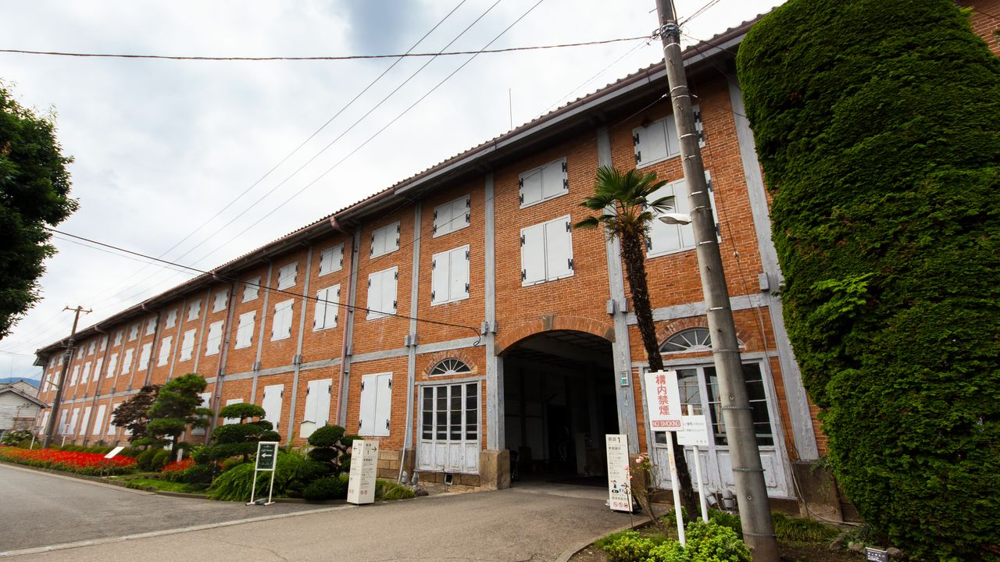

日本の関東地方に位置する県。県庁所在地は前橋市。 米麦栽培・養蚕・繊維工業などの伝統産業に加え、畜産・野菜栽培・機械工業が盛んで、県北西部は草津温泉などに代表される温泉保養地である。
県のマスコットは、馬の姿をした「ぐんまちゃん」
主に群馬県のPRを行っている。平成24年12月には「群馬県宣伝部長」に任命 され、全国各地を飛び回り、群馬の魅力を伝えています。平成26年には「ゆるキャラⓇグランプリ2014」で見事全国１位とな りました。
平成６年10月に開催された第３回全国知的障害者スポーツ大会「ゆうあいピック群馬大会」のマスコットとして誕生し、以後多数の群馬県内の大会マスコットを歴任しています。
群馬県には、温泉や自然、歴史ある観光地など、魅力的なスポットがたくさんあります。このページでは、その中からおすすめの観光地を紹介します。
日本を代表する温泉地のひとつで、湯畑を中心に温泉街が広がっています。 強い酸性のお湯が特徴で、観光と温泉の両方を楽しめます。

世界遺産に登録されている歴史的建造物で、 日本の近代化を支えた製糸産業の歴史を学ぶことができます。
トップページへ戻る